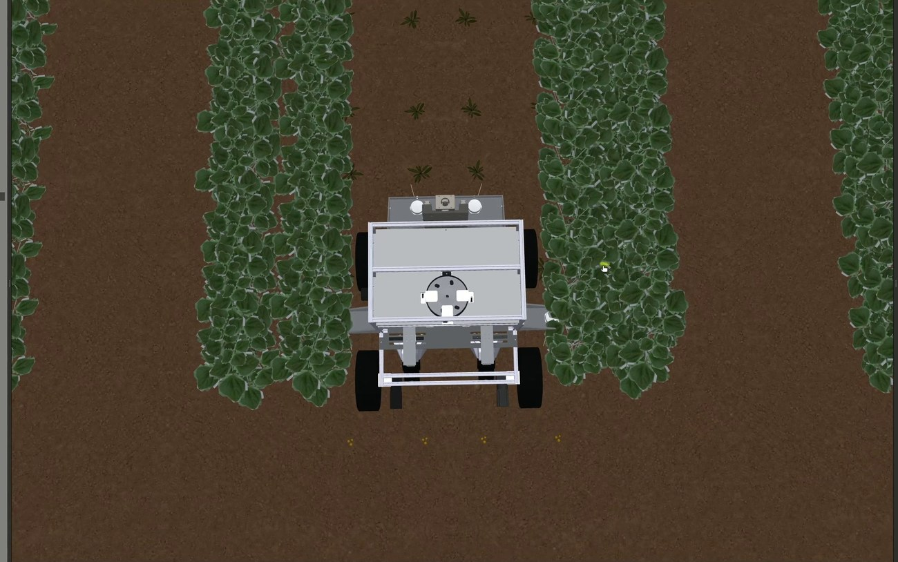
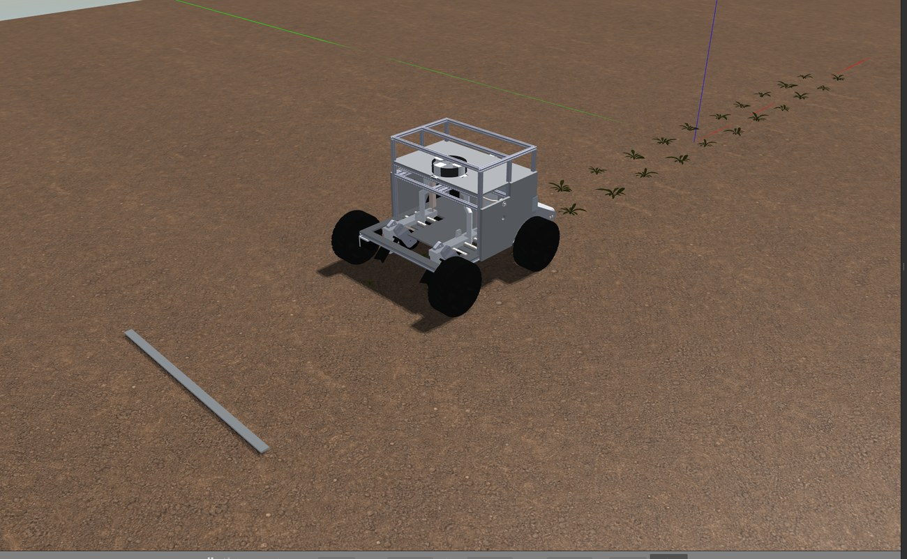

农业一体化多功能机器人

面向小型农田的可换农具移动底盘：一套 ROS 2 分层架构支撑播种、除草、集叶、割草四种作业，用 MS200P 单线激光雷达 + 轮速里程计完成建图、覆盖路径规划、动态禁区重规划与最小脱困；供电采用 7S13P 电池 + 三路 RGC 宽压 Buck-Boost 的分路架构。
技术要点
设计八包分层的 ROS 2 架构，把仿真与实机差异收敛到描述/仿真/硬件三个适配层，导航与自主作业共用同一套话题契约
seed_robot_description（URDF）/ simulation（Gazebo）/ hardware（ros2_control）/ control（安全出口）/ tasks / navigation / autonomy / bringup 八个包职责单一。上层规划不直接驱动电机，所有速度与工具请求都经 twist_mux 仲裁、再由 dual_mode_controller 输出。
实现覆盖作业管理器（941 行）：用 OpenNav Coverage/Fields2Cover 生成条带，逐条调用 NavigateToPose，并用覆盖账本保存每条带状态
账本区分「待作业/运行中/已完成/受阻」四态。重规划后不会仅凭「导航到终点」就认定作业完成；已完成条带被新障碍拆分时，会继承共线且被完整包含的子段完成状态，避免重复作业。
把雷达持续检出的致命障碍自动转为作业禁区并触发重规划，短暂障碍仍由 Nav2 局部绕行处理
全局代价地图中连续三帧、至少四格的 lethal 障碍才转为禁区，避免单帧噪声误判。禁区为保守策略：同一任务内不因障碍消失自动删除，降低误补作业风险。
设计最小脱困状态机：前进命令存在但里程计长期无位移时，先关闭工具、抬具，再受限后退转向，最多两次后转人工
默认约 3 秒观察窗口。恢复期间覆盖任务不会带工具盲动；失败后发布 latched fault 等待人处理。设计原则是先保证安全再谈智能——不做无限重试。
设计 7S13P 分路供电架构：三个 RGC4W300W 宽输入 Buck-Boost 分别驱动左右两侧行走电机与工具母线，避免低 SOC 时单一降压失效
7S 电池放电到末端会低于 24V，单一降压无法维持输出，因此选宽输入 Buck-Boost（RGC）并在左右两侧与工具各用一路，三路不并联。电池 25.2V/65Ah/1638Wh，按 80% DOD 预算约 1310Wh 可用。
建立主电源安全链：BMS → 主保险 → 维修断电 → 预充 → 主接触器 → 工具接触器，五级硬件串联且不能被上层软件绕过
工具母线用接触器做硬件互锁；急停、BMS 故障、通信超时或主接触器断开时农具必须失能。充电前由 STM32 确认触点接触、车速为零、工具停止且无故障，ROS 2 不直接闭合充电接触器。
现场


相关成果
- 国家二等奖 · 2026 年挑战杯「揭榜挂帅」擂台赛农业一体化多功能机器人2026-10